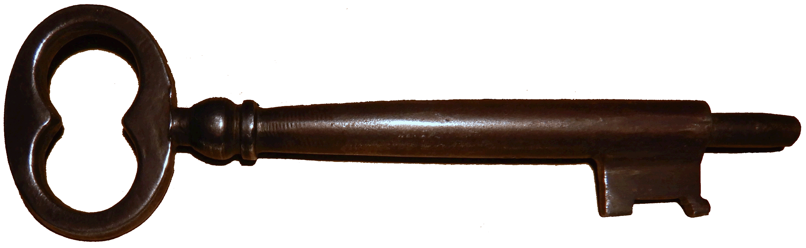

Cette page est résevée aux membres de l'Association!

RETOUR
Pour contacter l'Association Pierre Foncin ou laisser un commentaire sur votre visite
Accés à la billetterie de l'Office du Tourisme de Cavalaire